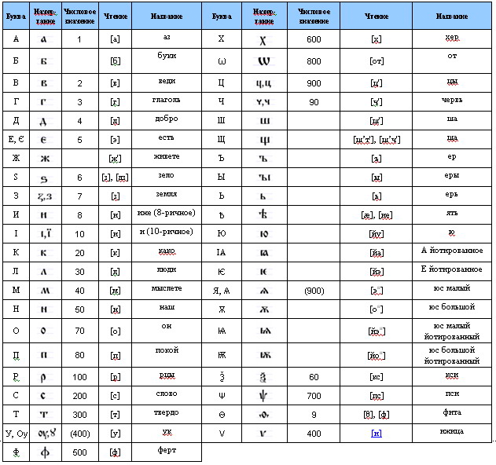

Старославянский язык
Вот уже более 10-х лет в Школе Мира в городе Санкт-Петербург проводятся занятия по изучению старославянского языка.
Занятия проводит старший преподаватель кафедры славянской филологии филологического факультета СПбГУ
Шулин Михаил Борисович.
Занятия проходят по свободному графику (в основном по вторникам в 19.00). Продолжительность занятия – 1 час 30 мин.
Для записи на занятия обращайтесь пожалуйста по телефону 8-911-110-63-33 либо пишите на почту shkolamira.spb@gmail.com
Зачем заниматься старославянским?
Мнение ученика
"Слово – есть тонкая материя. Произнесённое слово – первый шаг в материализации мысли. Наши предки ясно видели это и умели этим пользоваться. Умели творить словом и умели ВИДЕТЬ, как слово творит.
Более того, наличие в старославянском языке двойственного числа показывает, что наши предки не только видели и принимали двойственность Единого мира, но и весьма умело опирались на эти знания процессах взаимодействия с окружающим миром и описании этих процессов. Что в свою очередь указывает на наличие целостного Со-знания и обществе и у человека.
Изучая старославянский язык, можно прикоснуться к этим знаниям предков, научиться видеть наш язык, как язык Животворящий (Творящий словом Жизнь) и пробудить в себе силу и умение творить словом.
Изучение старославянского языка – есть мощное подспорье в овладении знаниями об уме, принятии двойственности Целого и развитии Видения."
Олег Сарычев
Мнение преподавателя
В Петербургском офисе «Школы мира» проводятся занятия по изучению старославянского языка, проводятся семинары, где изучаются произведения древнерусской литературы и рассматриваются смежные вопросы, могущие помочь лучшему усвоению материала курса.
Значение старославянского языка трудно переоценить. Прежде всего, Для науки это древнейшая письменная передача славянской речи. Принятие и развитие старославянского литературного языка явилось важнейшим прорывом для русской культуры. Старославянизмы прочно вошли в нашу речь; до самой революции простые люди постигали азы грамотности на церковных книгах.
Огромное духовное и культурное значение старославянского языка в том, что на благодаря ему стало доступно и открыто для Руси и славянства в целом священное писание. Ни для кого не секрет, что и по сей день современный вариант старославянского языка используется церковью.
Значение старославаянского еще и в его дифференцирующей роли, а именно: этот язык четко выделил славянскую языковую общность среди других языковых общностей. Ведь в основе восприятия каждой культуры – представление не только о ее связи и общности с другими культурами, но и о ее единстве и своеобразии. Уже в Х в. черноризец Храбр в своем трактате «О письменахъ» определенно отмечал своеобразие букв славянской азбуки, отражающее специфичность славянской фонологии в сравнении с греческой.
Старославянский язык – это базис для средневековой литературы нашей Родины, которую мы обобщенно привыкли называть древнерусской литературой. Несмотря на возрастающий интерес читательской аудитории, приходится признавать, что этот огромный пласт нашего культурного наследия все еще достаточно поверхностно известен широким кругам. Между тем не вызывает сомнений, что каждый читатель, открыв для себя эту неисчерпаемую сокровищницу русского слова, не сможет остаться равнодушным.
На занятиях в «Школе мира» изучаются важнейшие теоретические и практические аспекты грамматики, фонетики старославянского языка, истории развития древнерусской литературы с древнейшего периода, и, конечно же, наиболее интересные ее произведения.
Наши результаты и планы
Как уже упоминалось ранее, начало изучению старославянского и древнерусского языка в Санкт-Петербургской школе мира было положено в 2004 году,когда была сформирована первая учебная группа во главе с Жикаренцевым В.В.
С тех пор на наших семинарах побывало порядка пятидесяти человек, a из кружка любителей древнерусской словесности выросла своего рода творческая мастерская, где мы не только решаем основную задачу:
лучше понять родной язык, наших предков, снять налет более поздних искажений Слова (не простого набора букв или звуков, a значащей, звучащей единицы,обладающей особенным, зачастую сакральным смыслом), но и формируем методику преподавания, a также сам принцип верного и глубокого понимания родного языка.
Таким образом, изучается грамматика, без овладения которой невозможно адекватное восприятие древних текстов, и сами памятники непосредственно,что позволяет увеличивать словарный запас и глубже проникать в тайны родного языка. Следует отметить, что занятия ведутся в свободной диалоговой форме.В настоящее время, кроме семинаров непосредственно, нами предпринята попытка расширить границы языковой работы:
Во-первых, готовится к публикации «Сказание о Мамаевом побоище» - замечательный памятник древнерусской литературы XV века, с переводом и комментариями. Издание будет снабжено также факсимиле рукописи, что позволит широкому кругу читателей постепенно воспринимать и проникать в древнее Слово.
Отметим также тот факт, что публикация планируется в издательстве СПбГУ. Не вызывает сомнений, что всякое изучение языка нуждается в словаре.
В связи с этим ведется работа по созданию электронного варианта Словаря древнерусского языка под редакцией академика Измаила Ивановича Срезневского. Данный трехтомный труд, созданный на рубеже XIX – XX вв., не теряет актуальности и в наши дни, являясь незаменимым руководством при чтении древних памятников и надежным источником при изучении древнерусской лексики. Это обширная работа, и на данный момент обработано порядка 20 % общего объема лексем. Выпуск такой электронной версии позволит любому заинтересованному читателю всегда иметь под рукой полный и надежный источник изучения древних слов.
Обращает на себя внимание тот факт, что на семинарах особое внимание уделяется лингвистическому аспекту двойственного числа, его функционированию в языке наших предков; важность этой грамматической категории для Умоведения, да и миропонимания в целом, не вызывает сомнений. В ближайшее время мы планируем выпуск краткого методического пособия по данному вопросу, куда будут включены теоретическая составляющая, то есть грамматика двойственного числа; краткие сведения об истории его функционирования в языке, и практические задания, которые позволят закрепить и, при необходимости, применять знание двойственного числа даже в разговорной речи. Также мы планируем сделать эти материалы – попросту говоря, то, чем мы занимаемся насеминарах – доступными для дистанционного обучения. В лингвистическом аспекте курс старославянского языка будет достаточно гибким, чтобы отвечать запросам самой широкой аудитории.
Кириллица
Кириллица - одна из двух (наряду с глаголицей) древних азбук для старославянского языка:
Двойственное число
Невозможно представить себе мир без чисел. Без этого не мыслима не только любая наука, но и любое знание, вообще любое отношение к жизни. Паттерн вселенной, на любом ее уровне, есть просто число, вне зависимости от того, подсчитываем ли мы количество электронов в атоме, либо воспринимаем вибрации волн, или слушаем нескончаемые биения, формирующие гармонию сфер.
Как только единое разделяется надвое, то сам факт наличия двух частей, а не единого, создает взаимоотношение между ними. Понятие двойственности коренится в законах мышления.
В древнерусском языке, в отличие от современного русского, существовала интересная грамматическая категория: кроме единственного и множественного, было еще двойственное число. Таким образом, понятию единичности противопоставлялось не только более общее понятие множественности предметов, но и более конкретное понятие их двойственности. Двойственное число употреблялось при следующих условиях:
* Во-первых, если речь шла о природно-парных предметах; как правило, это соматизмы, то есть названия частей человеческого тела: око – очи – очеса. Следовательно, слова очи, уши и им подобные обозначали буквально глаза или уши одного человека.
* Во-вторых, в случае упоминания двух предметов или лиц: столъ – стола – столи. То есть форма стола указывала именно на два стола, на двойственное число.
* Кроме того, счетные слова дъва и оба сами по себе обозначали число два, т.е. были формами двойственного числа.
И существительные при них всегда были формами, стоящими в указанном числе: дъва стола, оба брата.
Формы двойственного числа дольше всего сохранялись у обозначений парных предметов, и многие слова, которые мы воспринимаем сейчас как множественное число, на самом деле остатки двойственного числа: уши (от ед. ч. ухо, «нормальным» мн. ч. было бы уха, как дело – дела), глаза, плечи (ср. редкую форму мн. ч. плеча), колени (ср. колена в дымоходе), рукава и так далее. До XIII века в новгородских берестяных грамотах, написанных на разговорном древнерусском языке, встречаются формы двойственного числа. Возможно, что на окраинах Новгородской земли оно оставалось в живом употреблении гораздо дольше.
В древности двойственное число было присуще всем славянским языкам, но до нашего времени только словенский язык и лужицкие говоры сохранили эту грамматическую категорию, в остальных славянских языках она утрачена примерно к XIV веку.
Система, основанная на противопоставлении трех значений, также была свойственна древнегреческому и санскриту. По сей день двойственное число является живой грамматической категорией в арабском и корякском, иврите и ненецком. В формах местоимений первого и второго лица и соответствующих им глаголах готского языка также представлено двойственное число; в некоторых баварских диалектах оно сохранилось по сей день. Стоит привести примеры из современного английского: изолированные следы прежнего двойственного числа были найдены в формах нескольких существительных, таких, как door «дверь» (первоначально две створки) и breast «грудь»; сейчас двойственное число можно усмотреть только у двух слов — two «два» и both «оба».
На наш взгляд, обширнейший ареал распространения данной грамматической категории (причем как в плане синхронии, так и с точки зрения диахронии) позволяет говорить о ее значимости как элемента языка и, соответствено, мышления.